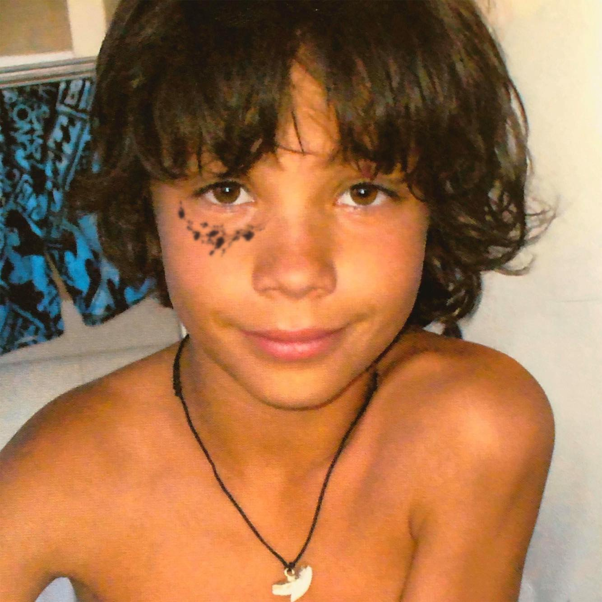

Bonjour, je m'apelle Rodrigue Meunier

Bienvenue sur mon profil !
Étudiant à Audencia Business School en troisième année de bachelor.
Ayant cumulé diverses expériences dans le domaine du marketing et de la communication, je me réoriente dans le domaine de la finance d'entreprise, du contrôle de gestion et de l'audit au sein de la filière Finance et contrôle de gestion à Audencia bachelor Nantes
Je suis à la recherche d'un stage en contrôle de gestion ou audit pour Janvier 2022 sur une durée de 6 mois.
Mon profil Instagram
Mes expériences
Durant mon cursus à Audencia, j'ai eu l'opportunité d'enrichir et développer mes compétences et réalisant plusieurs expériences professionnelles dans le domaine de la communication, du graphisme et et du marketing:
- Septembre 2020 à Aujourd'hui - Graphiste freelance, notamment pour Vega Skateshop, Magasin de skateboard basé à Paris. Réalisation de visuel pour gérer la communication de sorties de Sneakers limitées et attendues.
- Septembre à Novembre 2020 - Stage assitante marketing digital chez Trentetroisdegrés, réalisation de graphismes et optimisation de la SEO du site web. Refonte du médiakit.
- Janvier à Mars 2020 - Stage assistant marketing - communication/ réseaux sociaux au sein du média français Lesitedelasneakers, tableaux de reportings sur les divers activations avec les différentes marques partenaires (Lacoste, CREP...)